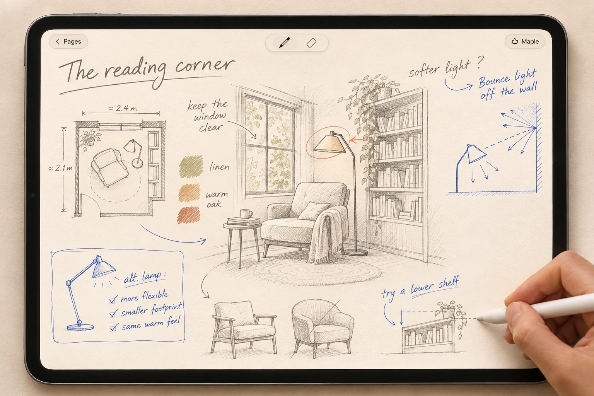

A notebook that thinks with you.
For visual thinkers who work ideas out with a pencil. Sketch a product, work through a problem, or plan what comes next. Maple thinks along, right on the page.

- Question mark
- Write a question. Lift the pencil, and Maple writes an answer beside it.
- Empty box
- Draw an empty box. Maple fills it with a diagram, a graph, or a picture, from the words around it.
- Edit mark
- Mark what you want to change. Circle part of Maple’s work with the edit brush and write what you have in mind.
Keep your pencil on the page. Your sketches, questions, and ideas stay together as the thought takes shape.
Explore Maple on GitHub